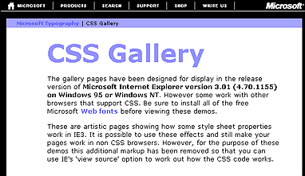

|
| ||
|
| ||
May 29, 1997
The following article was originally published in the Site Builder Network Magazine "Site Lights" column. (Now MSDN Online Voices "Design Discussion" column.)
The Site: Microsoft Typography Web Site: Cascading Style Sheets Gallery
The URL: http://www.microsoft.com/typography/css/downloads/entrance.htm 
The Creator: Simon Daniels
The Site: HotWired
The URL: http://www.HotWired.com/ 
The Creator: Taylor
A goal of site design is to keep things as light as possible, yet push the limits of creativity using unique, simple, visual combinations. Cascading style sheets (CSS) offer one way to keep page size to a minimum yet go beyond the boundaries of standard HTML content design. CSS is the best way to exercise more control and creative freedom over the way you organize your HTML content, colors, fonts, and alignment.
A few site designers began using CSS to enhance Web sites when Internet Explorer 3.0 first supported them. Now that the other major browser supports CSS (with some minor caveats of exact implementation), it's time for the World Wide Web world to support this standard and learn how to create light sites with style. Using CSS, you can create sites with such visual style and panache that your 14.4 modem users just can't say no--if they are using a CSS-aware browser.
Internet Explorer 4.0 supports the World Wide Web Consortium specification  for positioning HTML elements with CSS. This functionality takes the layout and structure of HTML content design to the next level, giving designers more control of dimension. Also supported is the ability to dynamically change style sheets and style features on a page.
for positioning HTML elements with CSS. This functionality takes the layout and structure of HTML content design to the next level, giving designers more control of dimension. Also supported is the ability to dynamically change style sheets and style features on a page.
As a simple example, I can change the color of a word or words when I mouseover the word. Or I can change a combination of characteristics like the color, the background color, the font, and the style of any text as I mouseover that text or other elements on the HTML page.
Note: To see this sample work, you must be running Internet Explorer 4.0  .
.
As we move into the next generation of Web design--with its new cliché, "push" technologies--understanding the implementation of CSS has become fundamental for Web designers.
Some designers have already started to experiment with the new way to position HTML elements and create dynamic styles. Let's meet two individuals who are jumping deep into the CSS waters by experimenting with the new Dynamic HTML functionality.

Software Design Engineer, Microsoft Typography Group
Q. When did you start using Cascading Style Sheets?
A. June, 1996
Q. What is your favorite Cascading Style Sheet feature?
A. It was "margin." I had lots of fun playing with effects that used negative values for margins--but currently Internet Explorer 4.0, Internet Explorer 3. x, and Netscape 4 interpret this differently, so it can no longer be relied on.
Q. What advantages do you experience using CSS as a complement to HTML?
A. Its font specification features are way in advance of anything available before. Linked style sheets make site maintenance easier.
Q. Where and on what URLs do you use Cascading Style Sheets?
A. http://www.microsoft.com/typography/ 
Q. What is your favorite resource for learning or referencing information about CSS?
A. The official spec. If you know a little HTML and basic desktop publishing terminology, it's very easy to follow.
Q. What feedback do you have about the new positioning HTML elements with CSS--and about Internet Explorer 4.0's implementation of this?
A. I've only played with it briefly, seems to work okay. But I've not played with Netscape's implementation. I think it's great that the spec is collaboration between Microsoft and Netscape people.
HotWired's singularly named "Minister of Ambiance and Energy"
Q. When did you first start using CSS?
A. HotWired has always been supportive of CSS technology, and has actively campaigned for its inclusion in Web browsers. So I've had a passing knowledge of their basic syntax and usage, how they were included on the page, and conceptually why they made more sense. However, since I've never been much of a designer, or a print-oriented person, I never really got very far. But once the 4.0 browsers started to support the positioning draft, and allowed one to modify it with a script, the performer in me jumped on it, and in the process I became familiar with CSS quickly.
Q. What is your favorite CSS feature?
A. Favorite is a weird statement to make. I like the inheritance structure of CSS, and the way that it allows style and content to exist as separate entities. But my favorite has to be the shape declaration of clip. Right now, your only choice is "rect," but since they have you declare it, that means that in the future there could be other shapes. Circles and triangles and polygons will follow soon, I expect. Then, some enterprising youngster with far too much time on their hands will eventually port over all the masks that came standard with the Amiga Video-Toaster. We'll have clip: falling-sheep, or clip: dancing-lady, and all those other transitions that never really work all that well if you aren't George Lucas.
Q. What advantages do you experience using CSS as a complement to HTML?
A. It just works better than trying to hack your way into the morass that HTML can become when you try to use it as a presentational markup language. Most of HTML was initially designed so that you couldn't use it for visual markup. Most Web old-timers will remember digging into their Mosaic browser and playing around with all the settings. "I want all H3 tags to be rendered in 72-point high-red italicized WingDings," we'd say, and have fun with it for a day before setting it back to the default. There was no right way for things to be rendered. Now there is a conceit that the way certain companies in Mountain View [California] choose to express a blockquote is canonical, because with consistency you can abuse HTML so that it gives you a basic, but functional, layout control.
With style sheets, and more to the point, style sheets with positioning, we completely move away from having to insert noise into the content just to make it lay out properly. Your document becomes more about containers, and what bits are inside what, which works better for both degrading into a cell phone and for compatibility with the browser of the future. Take the third paragraph and move its position up next to the first. Nudge the sixth sentence of every paragraph over a few picas.
Q. Do you have a favorite site that uses CSS?
A. Until downloadable fonts become the norm, style sheets are like the typographic equivalent to lighting design at a play. For most productions, if the designer did their job right, the audience didn't notice. I'm just glad when any site uses CSS.
Q. What is your favorite resource for learning or referencing information about CSS?
A. The Web Design Group has written a very good reference section, located at http://www.htmlhelp.com/reference/css/  , that I've actually printed out, which is rare for me.
, that I've actually printed out, which is rare for me.
Q. What feedback do you have about the new positioning HTML elements with CSS--and about Internet Explorer 4.0's implementation of this?
A. It's getting closer and closer to full implementation. I'm still wondering why no one has implemented the features where the viewer can set their own style sheet for documents. I'd love to be able style my own pages that I read, and this then alleviates the need to put any explicit style on many documents on the Web. I'd like a much finer control than just turning them off.
Q. Any additional feedback? Crazy, out of this world, anything you've ever dared say about CSS?
A. I look forward to the months after CSS goes rock star and every page looks like it was written to be a ransom letter with every letter in a different typeface. If you thought those KPT backgrounds that were all the rage with amateur designers back in 1994 were bad--oh baby, you ain't seen nothing yet. This is the price we pay for such a powerful and wonderful tool.
Nadja Vol Ochs is the design consultant in Microsoft's Developer Relations Group.
"CSS is 95% about typography, but as a designer you're still forced to guess which fonts your readers will have installed. When font embedding comes online in Internet Explorer 4.0 beta 2, we will see lots of cool pages (outnumbered by ugly ones) that really exploit CSS. "Using CSS is still a risky occupation--and people won't start to fully exploit its features until common browsers interpret CSS in pretty much the same way." - Simon Daniels So what do you do to prepare for the new browser features like Dynamic HTML and positioning of HTML elements with CSS? First, know the basics of how to implement CSS. That will prepare you to understand how to do positioning and create dynamic styles. Positioning and layout of all elements in HTML depends on understanding how to implement basic CSS features. My favorite resources for CSS basics are: The World Wide Web Consortium The Web Design Group's The MSDN Online Web Workshop Guide to CSS by our own Handan Selamoglu, editor-in-chief of the Workshop After you tackle the basics, then the next step is to print yourself a copy of the Positioning specification
Software Design Engineer, Microsoft Typography GroupStyle Sources
 : Go straight to all the old and new source specifications
: Go straight to all the old and new source specifications comprehensive guide to CSS
comprehensive guide to CSS off the World Wide Web Consortium's site.
off the World Wide Web Consortium's site.
Photo Credit: Russell Illig/PhotoDisc; Neil Beer/PhotoDisc
Did you find this material useful? Gripes? Compliments? Suggestions for other articles? Write us!
© 1999 Microsoft Corporation. All rights reserved. Terms of use.